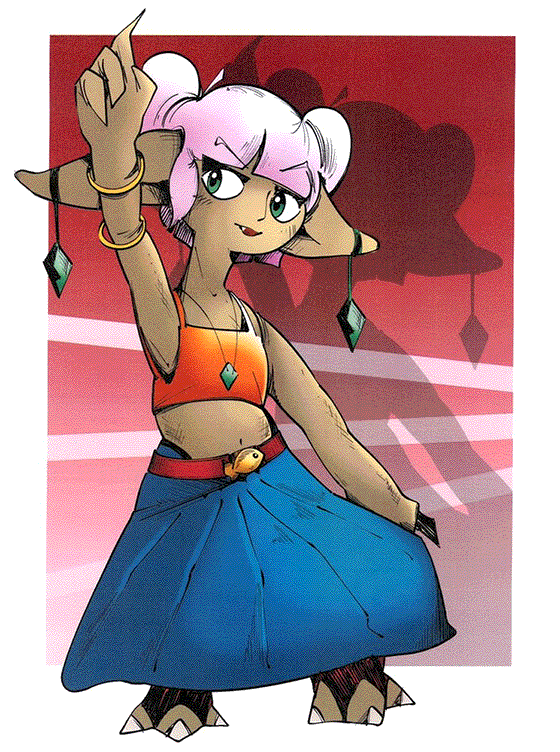

How can the icons of comics and architecture coalesce - in ink and type - to form a rich narrative which is both idiosyncratic and empathic?
In this thesis research, we explore the relationship between architecture, comics, and psychological and religious personal representation. We seek to describe and support the notion that a precise and emotive sequential portrayal of architecture - a realisation of the symbol or icon, rendered in ink - can enhance and enrich the personal narrative motivated by that sequence, through an integrated process of precedent research, storytelling, and creative exploration and investigation.
At the core of the thesis is the comic Stellaris, which directs all the techniques and reflection developed in the thesis creative research. Stellaris is the outcome - represented in architecture, ink, and icon - around which all other bodies of research in the thesis rotate. The generative act of writing a story which is individual and psychological comes first, and out of that deeply embedded process comes a second act of piecing together its formal ideas, techniques, and intentions. Incorporated into our illustrative creative practice is a formal investigation of symbols in architecture, comics, psychology, and religion, demonstrated through the medium of comics and storytelling, both by architects making use of the form and artists building tectonic environments into their sequential narratives.
